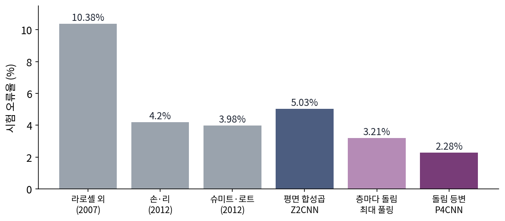
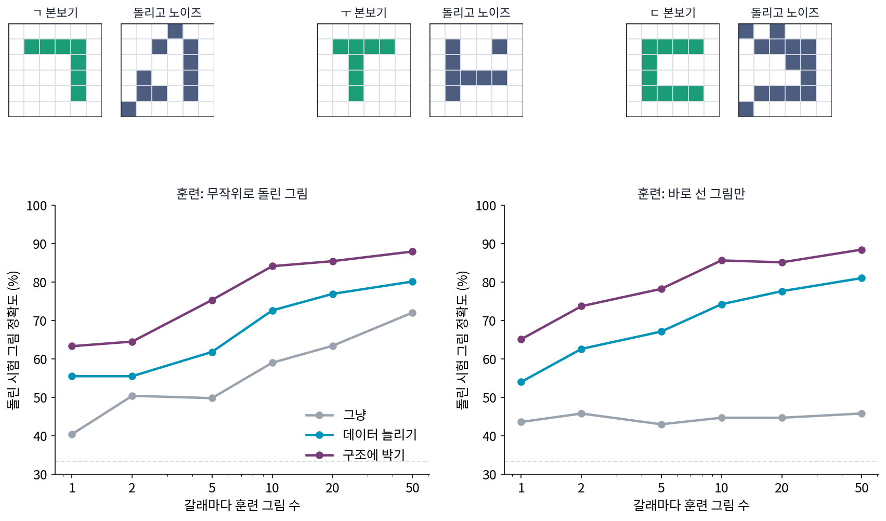
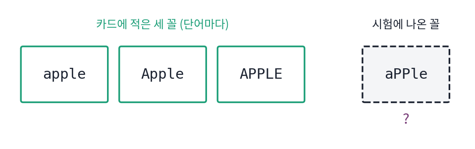
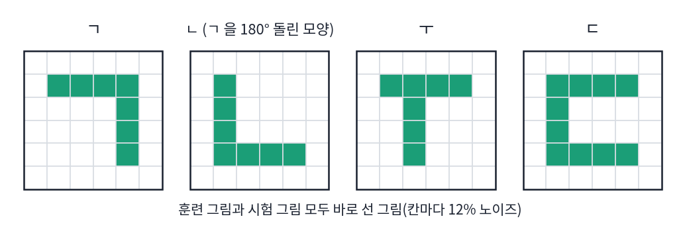
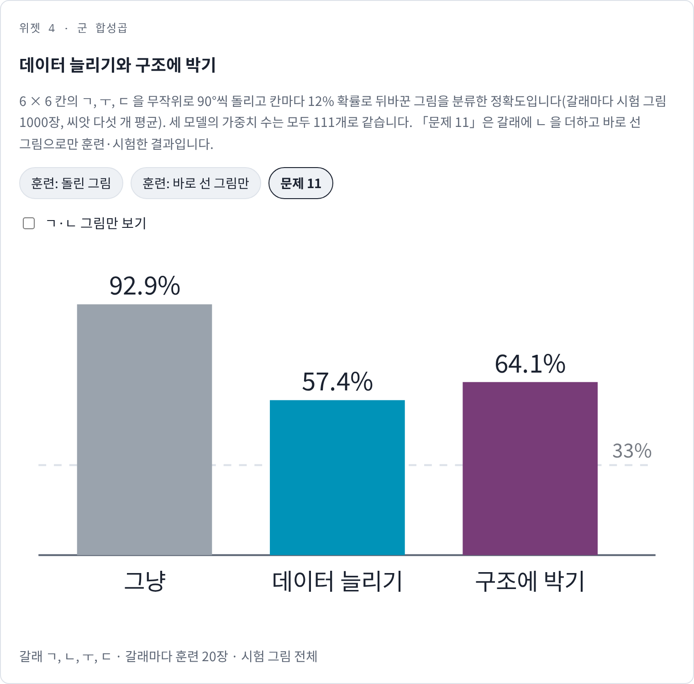
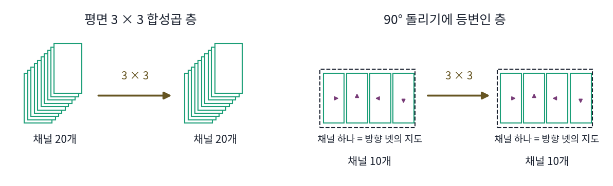

군 합성곱: 대칭을 구조에 박기
위성 사진 분류기가 90° 돌린 사진에도 같은 답을 내게 하고 싶다고 하자. 가장 쉬운 길은 훈련 사진을 네 방향으로 모두 돌려 넣어서, 모델이 「돌려도 같은 답」이라는 것을 예제로 배우게 하는 것이다. 다른 길은 돌려도 같은 답이 나올 수밖에 없는 모양으로 모델을 짜는 것이다. 둘 다 같은 대칭을 가르치는데, 같은 가중치 수와 같은 훈련 그림 수에서 결과도 같을까?
역사: 무작위로 돌린 손글씨 숫자
2007년 라로셸(Hugo Larochelle)과 동료들은 깊은 신경망이 여러 가지 흐트러짐을 얼마나 견디는지 보려고 손글씨 숫자 데이터 MNIST를 변형한 시험 문제들을 만들었다. 그 가운데 하나가 숫자를 무작위 각도로 돌린 데이터(rotated MNIST)다. 코언(Taco Cohen)과 웰링(Max Welling)의 논문에 따르면 이 데이터는 숫자 62000장이고, 훈련 10000장, 검증 2000장, 시험 50000장으로 나뉜다. 훈련 그림은 적고 돌림은 제멋대로라, 돌림을 따로 배우게 하면 그림이 모자라는 시험대다.
코언과 웰링은 「군 등변 합성곱 신경망(Group Equivariant Convolutional Networks)」(ICML 2016)에서 합성곱 커널 하나를 90°씩 돌린 넷으로 함께 쓰는 층을 제안했다. 같은 합성곱 커널을 칸마다 옮겨 쓰듯이, 돌린 방향마다도 같은 합성곱 커널을 돌려 쓰는 것이다. 가중치 수를 거의 같게 맞추려고 채널 수를 절반으로 줄였는데도 시험 오류가 평면 합성곱 신경망의 5.03%에서 2.28%로 줄었고, 돌림에 관한 지식을 따로 쓴 그때까지의 가장 좋은 기록 3.98%보다도 낮았다. 층마다 바로 돌림 방향을 지워 불변으로 만든 변형은 3.21%로, 끝까지 등변을 지키다가 마지막에만 방향을 지운 쪽보다 나빴다.


돌린 숫자가 어렵다면 훈련 그림을 여러 각도로 돌려서 더 넣으면 되잖아요. 요즘은 다들 그렇게 하고요.

이 데이터는 훈련 그림이 몇 장이고 시험 그림이 몇 장이었죠?

훈련 10000장, 시험 50000장이요. 보통은 훈련 쪽이 많은데 거꾸로네요. 숫자 하나가 각도마다 어떻게 보이는지 배우기에는 훈련 그림이 적게 짜여 있어요.

돌려 넣으면 그림 수는 늘어요. 그래도 신경망은 같은 숫자를 돌린 모습들이 한 숫자라는 것을 예제에서 하나씩 알아내야 해요. 그때까지 가장 좋은 기록 3.98%도 돌림에 관한 지식을 따로 써서 낸 것이었고요.

그런데 코언과 웰링은 채널을 절반으로 줄이고도 2.28%였죠. 가중치를 늘린 것도 아닌데요.

가중치 수는 맞춰 두고, 합성곱 커널을 돌려 쓰는 방식만 바꾼 거예요.

그러면 같은 가중치 수, 같은 훈련 그림 수에서 「돌린 그림을 더 넣기」와 「돌린 합성곱 커널을 함께 쓰기」를 작게 맞대 보면, 차이가 어디서 나는지 볼 수 있지 않을까요?
6 × 6 글자 모양 세 가지로 해 보는 실험
돌린 그림 분류를 작은 크기로 직접 해 보자. 6 × 6 칸에 ㄱ, ㅜ, ㄷ 세 글자의 모양을 그리고, 그림마다 무작위로 90°씩 돌린 뒤 칸마다 12% 확률로 0과 1을 뒤바꾸는 노이즈를 넣는다. 세 방법은 모두 칸 36개에 가중치를 매겨 글자마다 점수를 내는 같은 크기의 모델이다(글자마다 가중치 36개와 바이어스 하나, 모두 111개).
- 그냥: 그림의 칸 값에 가중치를 곱해 더한 점수로 글자를 고른다(소프트맥스 회귀).
- 데이터 늘리기: 같은 모델에 훈련 그림마다 90°씩 돌린 넷을 모두 넣는다.
- 구조에 박기: 글자마다 가중치 그림 w를 네 방향으로 돌려 그림과 내적하고, 가장 큰 값을 그 글자의 점수로 쓴다.
시험 그림은 무작위로 돌린 그림을 글자마다 1000장 쓰고, 씨앗 다섯 개의 평균을 낸다(s4_experiment.py).
| 글자마다 훈련 그림 | 1 | 2 | 5 | 10 | 20 | 50 |
|---|---|---|---|---|---|---|
| 그냥 | 40.4% | 50.4% | 49.8% | 59.0% | 63.4% | 72.0% |
| 데이터 늘리기 | 55.5% | 55.5% | 61.8% | 72.6% | 76.9% | 80.1% |
| 구조에 박기 | 63.3% | 64.5% | 75.3% | 84.1% | 85.4% | 87.9% |
구조에 박은 모델은 훈련 그림 10장으로 데이터 늘리기가 50장에서 낸 정확도를 넘는다. 훈련 그림을 모두 바로 선 그림으로만 주면 차이가 더 벌어진다. 그냥 모델은 돌린 시험 그림에서 43~46%로 우연(33%)보다 조금 나은 데 머문다. 다른 두 방법은 돌린 그림으로 훈련할 때와 비슷하다. 훈련 그림 2장과 5장에서는 바로 선 그림으로 훈련한 모델이 오히려 3~9%p 높고, 50장에서는 차이가 1%p 안이다.

데이터 늘리기가 왜 구조에 박기를 따라오지 못할까? 데이터 늘리기로 훈련한 모델의 가중치 그림을 꺼내 90° 돌려 보면 처음 가중치 그림과 똑같다(차이 0). 돌린 그림 넷에 모두 같은 점수를 줘야 하니, 칸 36개짜리 선형 모델이 찾을 수 있는 답은 돌려도 같은 가중치 그림뿐이고, 그런 그림은 6 × 6 칸의 돌림 묶음 9개마다 숫자 하나씩, 자유로운 숫자가 9개뿐이다. 돌려도 같은 가중치 그림과의 내적은 입력의 돌리기 성분 가운데 평균 P0만 보므로, ㄱ의 꺾인 방향 같은 정보가 들어 있는 다른 성분은 버려진다. 구조에 박은 모델은 가중치 그림이 ㄱ 모양 그대로 날카롭게 남고, 그림을 네 방향으로 돌려 맞춰 본 뒤 가장 잘 맞는 방향을 고른다.
이렇게 합성곱 커널(여기서는 가중치 그림)을 군의 원소마다 변환해 같은 것을 함께 쓰는 연산을 군 합성곱 (돌린 합성곱 커널을 함께 쓰는 합성곱 / group convolution)이라 한다. 돌린 방향마다 하나씩 나오는 점수 묶음은 입력을 돌리면 방향 칸을 따라 한 칸씩 돌므로 등변이고, 그 묶음에서 가장 큰 값만 남기면 불변이 된다.
그림을 90° 돌리면 가중치 그림 넷과의 내적 넷이 한 칸씩 돌아 자리만 바뀌고, 가장 큰 값은 바뀌지 않는다. 대칭은 훈련 데이터가 아니라 계산의 모양이 지킨다. 코언과 웰링의 층은 이 일을 합성곱 커널마다, 칸마다 하고, 마지막 층까지 방향별 점수 묶음을 등변으로 넘긴다.
ML에서: 어디까지 박고, 언제 늘릴까
코언과 웰링의 실험에서 층마다 바로 불변으로 만든 변형이 끝까지 등변을 지킨 모델보다 나빴던 것은, 불변으로 만드는 순간 「어느 방향이었나」를 버리기 때문이다. 아래층에서 짧은 획의 방향을 버리면, 위층은 획 둘이 어떤 각도로 만나는지를 알 수 없다. 그래서 등변인 층을 쌓고 마지막에 한 번만 불변으로 모으는 것이 기본 꼴이 되었다. 합성곱 신경망도 칸마다 같은 합성곱 커널을 써서 평행이동에 등변인 지도를 만들고, 끝에서 풀링으로 한 번만 불변으로 모은다.
데이터 늘리기가 쓸모없다는 뜻은 아니다. 밝기를 조금 바꾸거나 그림을 조금 잘라 내는 것처럼 정확한 군이 아닌 흐트러짐, 「대체로 그렇다」 정도인 대칭은 구조에 박기 어렵고 예제로 보여 주는 편이 쉽다. 정확히 지켜지는 대칭은 구조에 박으면 가중치와 훈련 그림을 아끼고, 대략 지켜지는 대칭은 데이터로 가르친다. 다만 데이터에 없는 대칭을 구조에 박으면 모델이 처음부터 가를 수 없는 것이 생기는데, 그 경우는 문제 11에서 본다.
문제 10. 영어 단어장의 대소문자
영어 단어 500개를 외우면서 단어마다 apple, Apple, APPLE 세 꼴을 카드에 따로 적는다. (가) 카드는 몇 장인가? (나) 다섯 글자 단어의 대소문자 꼴은 모두 몇 가지이고, 세 꼴은 그 가운데 몇 %를 덮는가? (다) 시험에 aPPle 이 나오면 카드로 알아볼 수 있는가? 카드를 늘리지 않고 해결하는 방법은?

(가)는 1500장이요. (나)는 대문자 꼴이 세 가지쯤이니까 거의 다 덮겠죠.
글자마다 대문자인지 소문자인지 고를 수 있으면 다섯 글자에서 몇 가지가 나오죠?
2를 다섯 번 곱해서 32가지네요. 세 꼴은 32가지 가운데 9.4%밖에 안 돼요. (다) aPPle은 카드에 없어요.
카드를 늘려서 32가지를 다 적으면 500 × 32장이 돼. 그보다 「모두 소문자로 바꾼 뒤 비교한다」는 규칙 하나를 두면 aPPle도 apple이 되니까 카드는 500장이면 돼.
카드를 꼴마다 늘리는 방법과, 대소문자를 지우는 규칙을 비교하는 방법 안에 박는 방법이에요. 6 × 6 글자 모양 실험의 두 길과 무엇이 대응하죠?

카드 늘리기가 데이터 늘리기이고, 소문자로 바꾸는 규칙이 구조에 박기예요. 대소문자 바꾸기는 정확히 지켜지는 대칭이라 규칙으로 박는 게 낫고요. 대신 영어 이름 Mark와 동사 mark를 가려야 하는 시험이면 그 규칙 때문에 못 가려요.

코드에서 문자열 비교할 때 .lower()부터 하고 시작하던 게 이거였네요.
문제 11. ㄴ 을 더하면
6 × 6 글자 모양 실험의 세 글자에 ㄱ 을 180° 돌린 모양인 ㄴ 을 더해 ㄱ, ㄴ, ㅜ, ㄷ 네 글자로 만든다. 이번에는 훈련 그림과 시험 그림을 모두 바로 선 그림으로만 쓴다(글자마다 훈련 20장). (가) 세 방법 가운데 어느 것이 가장 잘 맞힐까? (나) ㄱ·ㄴ 그림만 놓고 보면 어떤가? (다) 「돌려도 같은 답」이라는 대칭을 박은 것이 무엇을 망쳤는가? (위젯 4의 「문제 11」로 확인해 보자.)

구조에 박기가 6 × 6 글자 모양 실험에서 계속 이겼으니까 이번에도 구조에 박기가 제일 잘하겠죠.
구조에 박은 모델은 ㄱ 그림과, 그것을 180° 돌린 그림에 어떤 점수를 주게 되어 있죠?

아, 돌려도 점수가 같게 만들었으니까 ㄱ과 ㄴ에 똑같은 점수를 줘요. 둘을 가를 수가 없어요.
숫자로도 확인해 볼까요?
계산하면 전체 정확도가 그냥 92.9%, 데이터 늘리기 57.4%, 구조에 박기 64.1%예요.
ㄱ·ㄴ 그림만 보면 그냥은 93.1%인데 구조에 박기는 43.0%, 데이터 늘리기는 35.5%야. 둘 가운데 하나를 고르는 것보다도 못해. 둘을 가를 수 없으니 노이즈에 따라 다른 글자로도 새는 거지.
(다)는요? 6 × 6 글자 모양 실험과 무엇이 달라졌죠?
글자 모양 실험에서는 시험 그림이 무작위로 돌아 있었어요. 여기서는 글자가 늘 바로 서 있고, 돌리면 다른 글자가 되네요.
그럼 「돌려도 같은 글자」는 어느 쪽 데이터에 있던 대칭이었죠?

앞 실험의 데이터요. 여기서는 데이터에 없는 대칭을 박으니까 가려야 할 것을 못 가르게 됐어요. 박기 전에 그 대칭이 데이터에 정말 있는지부터 물어야 하네요.

숫자 6과 9도 180° 돌리면 서로가 되니까, 손글씨 숫자 분류에 「돌려도 같다」를 박으면 6과 9를 못 가르겠네요. 대칭은 많이 박을수록 좋은 게 아니었어요.

문제 12. 가중치 수를 맞춘 돌림 등변 층
3 × 3 합성곱 층 하나가 채널 20개를 받아 20개를 낸다. 코언과 웰링처럼 이 층을 90° 돌리기에 등변인 층으로 바꾸면서 채널 수를 절반(10개)으로 줄인다. 등변 층의 입력과 출력은 채널마다 돌린 방향 넷의 지도를 가진다. (가) 두 층의 가중치 수는 각각 몇 개인가? (나) 출력 지도는 각각 몇 장인가? (다) 같은 그림 크기에서 곱셈 수는 몇 배가 되는가? 가중치 수가 같은데도 왜 등변 층이 나았는지 말하라.

(가)는 평면 층이 20 × 20 × 9 = 3600개요. 등변 층은 채널이 10개니까 10 × 10 × 9 = 900개, 4분의 1이네요. 그러면 가중치가 적어서 나았다는 거예요?
등변 층의 합성곱 커널 하나는 입력 채널 하나의 지도 몇 장을 보죠?
입력도 채널마다 방향 넷이니까 네 장이요. 그러면 10 × (10 × 4) × 9 = 3600개라 같아요. 출력 지도는 평면이 20장, 등변 층은 채널 10개에 방향 넷이라 40장이에요.
(다)는 출력 지도가 두 배, 지도 한 장이 보는 입력 지도도 두 배라서 곱셈은 4배야. 가중치는 같은데 계산은 늘어.
그러면 늘어난 계산은 무엇을 얻었을까요? 등변 층의 합성곱 커널 하나가 하는 일을 평면 층으로 하려면 무엇이 필요할지 생각해 봐요.
평면 층이 등변 층의 합성곱 커널 하나가 하는 일을 따라 하려면, 그 합성곱 커널과 그걸 돌린 셋을 따로따로 배워야 하겠네요.

따로 배운 넷이 정말 서로를 돌린 꼴이 되려면?
그만큼 돌린 그림을 봐야 해. 등변 층은 돌린 셋을 공짜로 얻으니까, 같은 가중치 수로 서로 다른 모양을 더 많이 배울 수 있었던 거야.
보고서 그래프를 가로판, 세로판으로 따로 그리지 않고 하나 그려서 돌려 쓰는 거네요. 대신 인쇄할 종이는 늘고요.